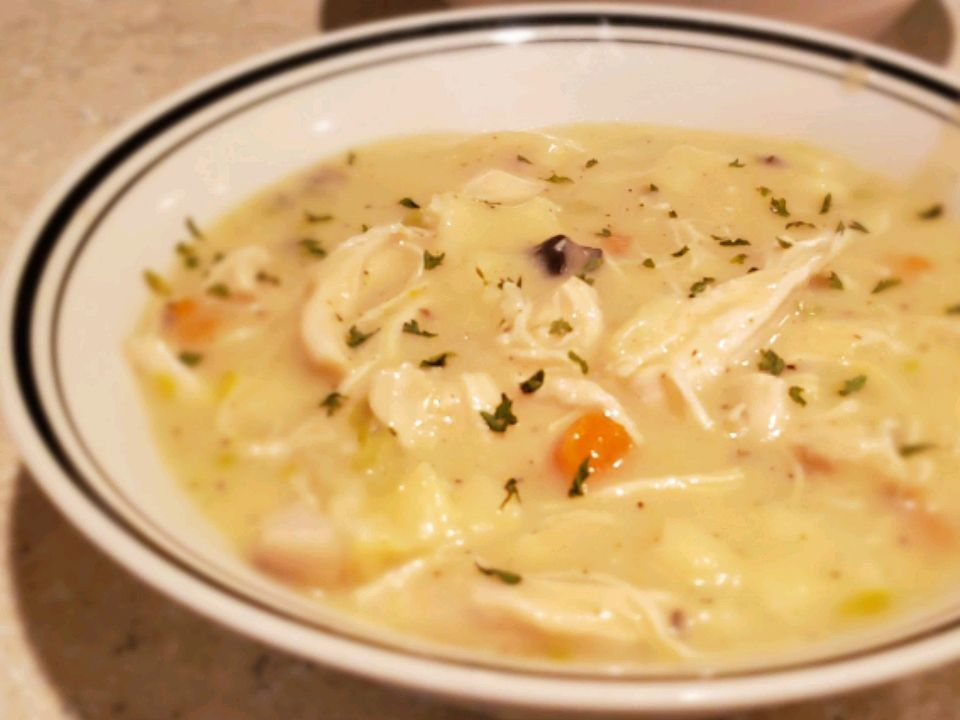

Chicken and Dumplings

Ingredients
- 2 (10.5 ounce) cans condensed cream of chicken soup
- 3 (14 ounce) cans chicken broth
- 3 cups shredded cooked chicken meat
- 2 (10 ounce) cans refrigerated biscuit dough
Steps
- Stir condensed soup, chicken broth, and shredded chicken together in a large saucepan over medium-high heat until it begins to simmer.
- Cut each biscuit into quarters, and gently stir into the simmering soup.
- Reduce heat to medium-low, cover, and simmer until biscuits are no longer doughy in the center, 10 to 15 minutes.